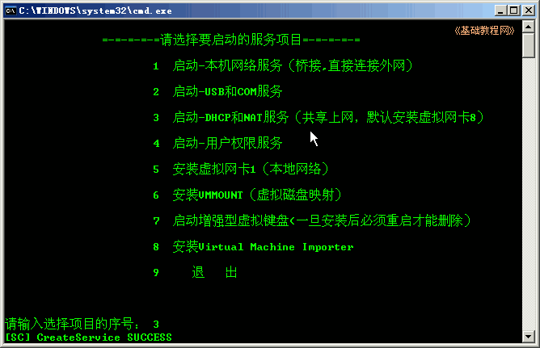
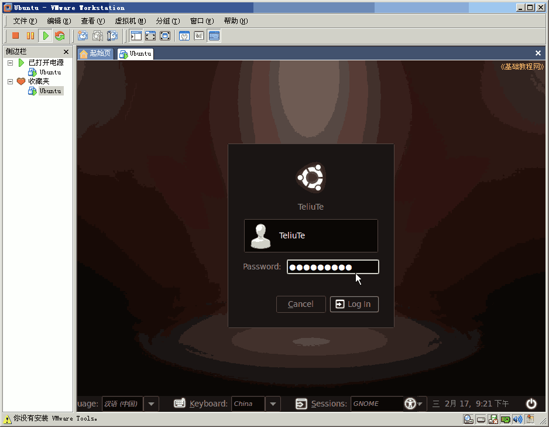

Ubuntu安装基础教程
作者：TeliuTe 来源：基础教程网
十八、VMware中安装Ubuntu 返回目录 下一课VMware 是一个常见的虚拟机系统，可以用来安装其他操作系统；
1、安装VMware
1）下载精简版(仅供学习使用)：http://gmbox.swdol.cn/tools/VMwareWorkstation-v6.0.rar；
2）解压到文件夹里，把这个文件夹剪切到C:盘里，进入文件夹双击“!)绿化.bat”安装；
3）在出来的窗口里输入 y 回车键
4）等一会出来数字，输入 3 安装DHCP和Nat；

5）过一会再输入 1 启动本机，安装桥接，再按9退出；
6）然后再双击文件夹里的 vmare 文件，运行程序；
7）首次会出来许可协议，点“我同意”；
8）关闭出来的“每日提示”；
9）点“新建虚拟机”，这是准备一个虚拟的空电脑；
10）出来向导，点“下一步”；

11）接着还是点“下一步”；
12）系统这儿依次选“linux－Ubuntu”；
13）接下来名称点“下一步”；
14）接下来“网络类型”选中间的“使用地址翻译NAT”；

15）接下来磁盘容量不变，点“完成”；
16）左边侧栏出来一个Ubuntu；
17）在主窗口，点“编辑虚拟机”；
18）在左边选CD-ROM，右边选“使用ISO镜像”，找到下载的Ubuntu镜像；
2、安装Ubuntu
1）在侧栏选中Ubuntu点启动，在出来的语言界面用方向键选“中文(简体)；
2）然后选第一个试用，按回车键继续；
3）启动过程，等待；
4）进入试用桌面，点“安装”图标；
5）点“前进”，这是欢迎；
6）点“前进”，这是地区；
7）点“前进”，这是键盘；
8）分区这儿点“手动”，前进；
9）点“新建”，空机子空磁盘；
10）点“继续”，这是确认一下；
11）点“添加”，这是建立主分区；
12）新容量7563，留上1024，挂载点选 /
13）回来后再选剩下的，点“添加”，这次挂载点选 交换空间；
14）回到主窗口，点前进；
15）输入用户名和密码，前进；
16）点“安装”；
17）安装过程，耐心等待，去喝杯茶吧；
18）点“现在重启”，装好了；
19）出来一个黑屏，按一下回车键(ENTER)；
3、源和更新中文包
1）在登录里点一下，输入自己的密码，按回车键；

2）进入桌面；
3）点左上角“Applications－Accessories－Terminal”，打开终端；
4）依次输入命令，出来的password盲打输入自己的密码按回车键；
sudo cp /etc/apt/sources.list /etc/apt/sources.list_backup
sudo gedit /etc/apt/sources.list
5）在出来的文本编辑器窗口中，先删除所有内容，再复制下面的这一组源进去，保存退出；
deb http://ubuntu910.jiupianzi.com/ubuntu/ karmic main restricted
6）再输入 sudo apt-get update 更新源列表；
7）回到最开头的“不完整语言支持”对话框，如果没了就点上边的菜单“System－Administration－Language Support”，都选择“汉语”，点左下角的“Run this action now”；
8）在出来的对话框里点“Install”安装；
9）输入自己的密码；
10）然后开始下载和安装；
11）完成后点“Close”关闭三个对话框；
12）点右上角“关机”按钮，选 Restart..重启动就好了；
13）点“系统－系统管理－新立得软件包－搜索－标记－应用”，可以安装所需的软件包；
14）也可以双击一个deb包来安装；
本节学习了在VMware中安装Ubuntu的基本操作，如果你成功地完成了练习，请继续学习下一课内容；
本教程由86团学校TeliuTe制作|著作权所有
基础教程网：http://teliute.org/
美丽的校园……
转载和引用本站内容，请保留作者和本站链接。
|
|
|
|
|
|